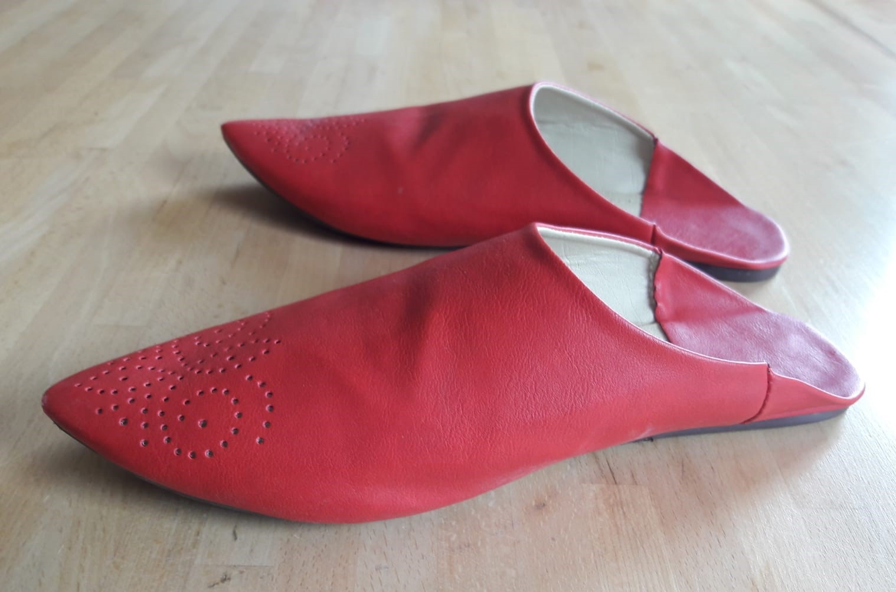
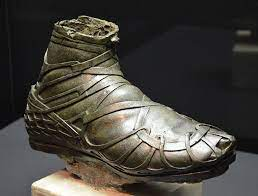
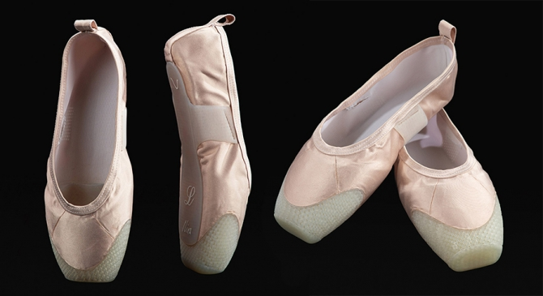
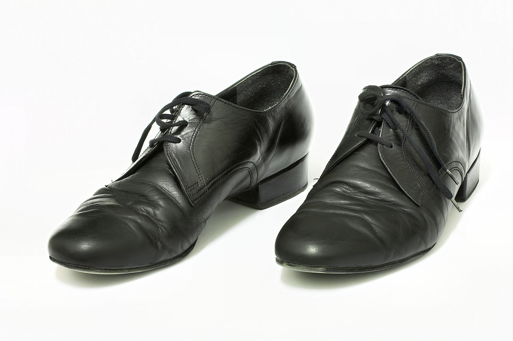

Наиболее значимый признак классификации обуви — её вид. Согласно ГОСТ 23251-83 «Обувь. Термины и определения» к видам обуви относятся: сапоги, сапожки, полусапоги, полусапожки, ботинки, полуботинки, туфли, сандалии, туфли комнатные, сандалеты, чувяки, мокасины, опанки.
Несколько наиболее интересных моделей обуви по версии интернет-блога Cjcb Gbcjc
Бабуши — турецкие туфли, калоши без задников, верхняя обувь, сверх мештей, на босовики.
Калиги — военная плетеная обувь древних римлян.
Пуанты — специальные балетные тапочки, в которых балерина танцует, опираясь на кончики пальцев ног.
Штибле́ты— кожаные или суконные гамаши, а также позднее обувь из сукна или полотна на пуговицах сбоку, плотно облегающая ногу.Вернуться в начало